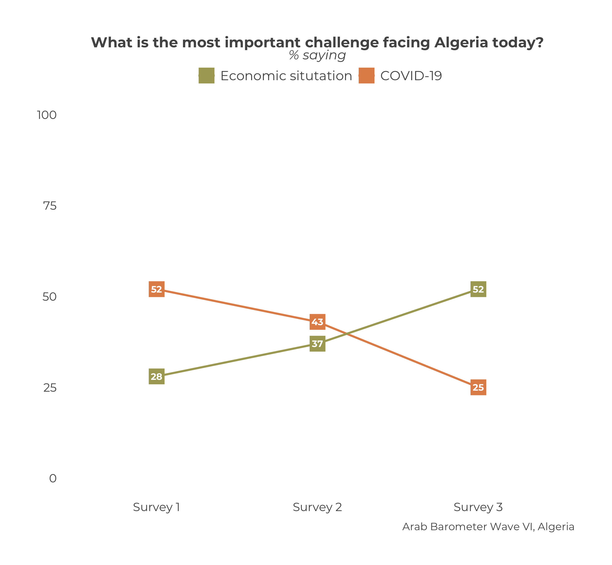

Chapter 15 BARE BONES: Single Country Multi-Question Trend Plots
At the end, your code will look like the following:
questions_2_compare <- list("Q2061A_1",
"Q2061A_15")
df_list <- list(survey1,
survey2,
survey3)
survey_dates <- c("Survey 1",
"Survey 2",
"Survey 3")
plot_trend_multiquestion_individual(questions_2_compare,
df_list,
survey_dates,
"Algeria",
legend.names = c("Economic situtation","COVID-19"),
.title = "What is the most important challenge facing Algeria today?",
.subtitle = "% saying",
.caption = "Arab Barometer Wave VI, Algeria")That code will produce the following graph:

Let’s go!